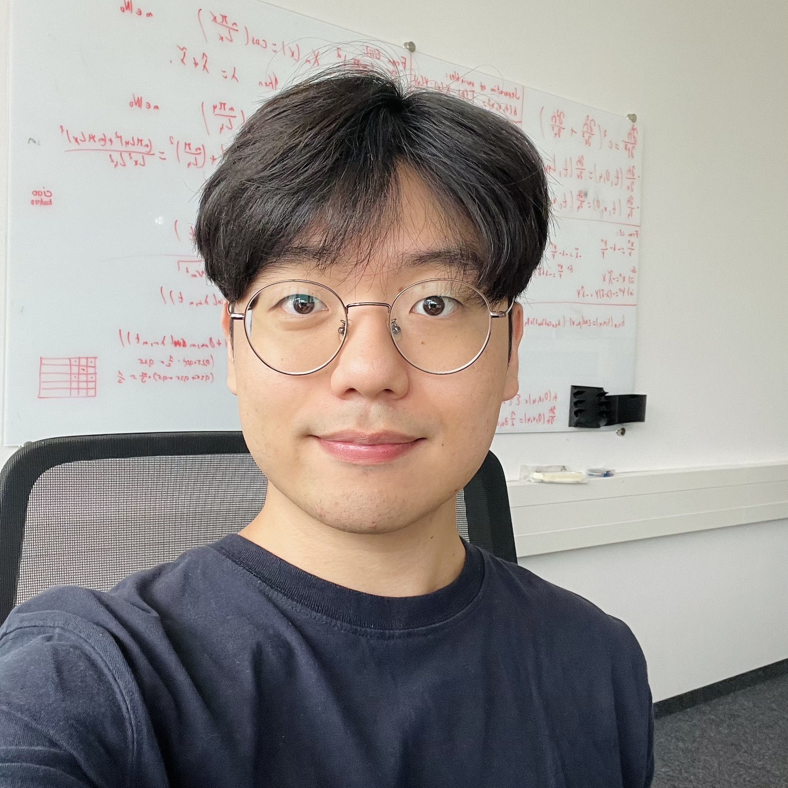

Kim Youwang
youwang.kim@postech.ac.kr I am a Ph.D. student at AMILab in Electrical Engineering at POSTECH, advised by Tae-Hyun Oh. Also, I was a visiting researcher at Real Virtual Humans Group at the Univ. of Tübingen, working with Gerard Pons-Moll. I am also an incoming research scientist intern at Meta Reality Labs - Codec Avatars team, hosted by Yaser Sheikh. I received my bachelor's degree in Electrical Engineering from POSTECH.
I work on research projects at the intersection of computer graphics, vision, and machine learning. My research interests are on creating 3D/4D virtual humans, animals, and objects by understanding their realistic shapes and appearances.
CV | Google Scholar | GitHub
News
- 07/2024 Our paper on large-scale 3D face mesh dataset is accepted to TMLR 2024.
- 07/2024 Our paper on robust monocular 3D mesh reconstruction is accepted to BMVC 2024.
- 07/2024 I won the best poster award in POSTECH-KAIST joint ML workshop 2024.
- 02/2024 I'll be joining Meta Reality Labs - Codec Avatars team as a research scientist intern, starting this fall.
- 02/2024 Our paper on text-driven PBR texture synthesis is accepted to CVPR 2024.
Research Experiences
- Meta Reality Labs - Codec Avatars team, Pittsburgh, PA.Oct 2024 - Mar 2025
(Incoming) Research Scientist Intern, will work with Yaser Sheikh, and Jovan Popović.
- University of Tübingen - Real Virtual Humans group, Tübingen, Germany.Sep 2023 - Mar 2024
Visiting Researcher, worked with Gerard Pons-Moll.
- POSTECH - Algorithmic Machine Intelligence lab, Pohang, Korea.Sep 2020 - Present
Graduate Student, working with Tae-Hyun Oh.
Publications

A Large-Scale 3D Face Mesh Video Dataset via Neural Re-parameterized Optimization
Kim Youwang, Lee Hyun*, Kim Sung-Bin*, Suekyeong Nam, Janghoon Ju, Tae-Hyun Oh
TMLR 2024
Project page |
Paper |
Openreview |
Code (TBA)

Paint-it: Text-to-Texture Synthesis via Deep Convolutional Texture Map Optimization and Physically-Based Rendering
Kim Youwang, Tae-Hyun Oh, Gerard Pons-Moll
CVPR 2024
Project page |
Paper |
Video |
Code |
Poster
- Best Poster Award at POSTECH-KAIST joint ML workshop 2024
- Presented in AI for Content Creation Workshop (AI4CC) at CVPR 2024
- Presented in AI for 3D Generation Workshop (AI3DG) at CVPR 2024
MeTTA: Single-View to 3D Textured Mesh Reconstruction with Test-Time Adaptation
Kim Yu-Ji, Hyunwoo Ha, Kim Youwang, Jaeheung Surh, Hyowon Ha, Tae-Hyun Oh
BMVC 2024
Project page
ObjectDR: Object-Centric Domain Randomization for 3D Shape Reconstruction in the Wild
Junhyeong Cho, Kim Youwang, Hunmin Yang, Tae-Hyun Oh
CVPRW 2024
Project page |
Paper
CLIP-Actor-X: Text-driven 4D Human Avatar Generation via Cross-modal Synthesis-through-Optimization
Kim Youwang*, Taehyun Byun*, Kim Ji-Yeon, Sungjoon Choi, Tae-Hyun Oh
Journal under review

Feed-Forward Photorealistic Style Transfer for Large-Scale 3D Neural Radiance Fields
GeonU Kim, Kim Youwang, Tae-Hyun Oh
AAAI 2024
Project page |
Paper |
Code
Text-driven Human Avatar Generation by Neural Re-parameterized Texture Optimization
Kim Youwang, Tae-Hyun Oh
ICCVW 2023
Paper |
Poster
STREAM: Spatio-Temporally Consistent Face Mesh Reconstruction on Videos
Kim Youwang, Lee Hyun*, Kim Sung-Bin*, Suekyeong Nam, Janghoon Ju, Tae-Hyun Oh
CVPRW 2023
Poster

Multi-stage Adaptive Rank Statistic Pruning for Lightweight Human 3D Mesh Recovery Model
Dong Hun Ryou, Kim Youwang, Tae-Hyun Oh
The Visual Computer Journal (TVCJ) 2023
Paper

CLIP-Actor: Text-Driven Recommendation and Stylization for Animating Human Meshes
Kim Youwang*, Kim Ji-Yeon*, Tae-Hyun Oh
ECCV 2022
Project page |
Paper |
Video |
Code |
Poster
- Grand Prize (1st place, Minister's award, $12K) at ICT paper awards 2023
- Qualcomm Innovation Award Winner 2022
- Presented in AI for Content Creation Workshop (AI4CC) at CVPR 2023

FastMETRO: Cross-Attention of Disentangled Modalities for 3D Human Mesh Recovery with Transformers
Junhyeong Cho, Kim Youwang, Tae-Hyun Oh
ECCV 2022
Project page |
Paper |
Code |
Poster

Unified 3D Mesh Recovery of Humans and Animals by Learning Animal Exercise
Kim Youwang, Kim Ji-Yeon, Kyungdon Joo, Tae-Hyun Oh
BMVC 2021
Project page |
Paper
Awards & Honors
- Winner of POSTECH-KAIST joint ML workshop Best Poster Awards, 2024
- Winner of Electronics Times ICT Paper Awards (Minister’s award, $12,000 prize), 2024
- ICCV Outstanding Reviewer Award, 2023
- Winner of Qualcomm Innovation Fellowship Korea (QIFK, $4,000 prize), 2022
- International Computer Vision Summer School (ICVSS), 2022
Talks
- Towards Efficient & Realistic Virtual World Communication, INNERVERZ, Korea, 2023
Academic Services
- Conference Reviewer: CVPR, ICCV (Outstanding reviewer 2023), ECCV, NeurIPS, BMVC
- Journal Reviewer: TPAMI, ACM TOG/SIGGRAPH Asia, IJCV, TMM
Misc.
- Come visit my Youtube channel! I sometimes upload paper reviews (in Korean).
- As a guitarist of the band STEELER, I also upload some music covers or gigs.